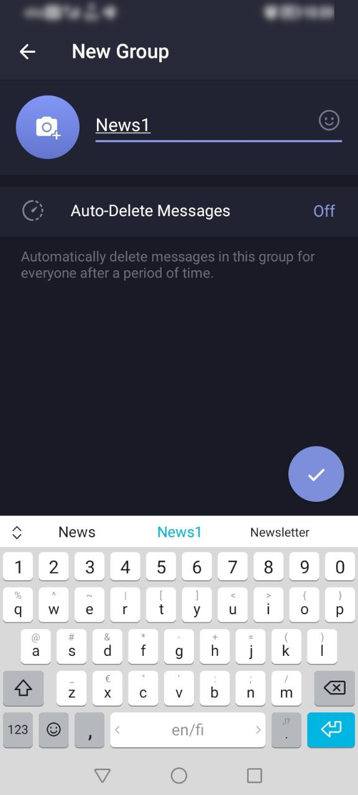

| To start using the Awakari Bot it's necessary to agree with Terms of Service and tap the "START" button. | |
|
Awakari Bot: manage subscriptions and usage limits, publish messages. |
 |
Subscriptions list |
 |
Subscription Details |
 |
2.1.1.1. Create a new target group to link the subscription to it. |
|  | 2.1.1.2. Give a name to the new group to find it later. Ideally, the group name should match the subscription description. |
 |
2.1.1.3. Tap "Link Chat" button under a selected subscription details. |
 |
2.1.1.4. Select the target group from your groups list. |
 |
2.1.1.5. Tap "Add bot as Member" button in the appeared dialog. |
 |
2.1.1.6. Sometimes Telegram shows an error when adding the bot to a new group. In this case, tap the back button and select the group again. The error then disappears. |
 |
2.1.1.7. After the subscription is linked to the chat, the bot starts to deliver the matching messages into the group. |
 |
2.1.1.8. The bot will remind when subscription expires sooner than in 1 week. |
| 2.1.1.9. The bot will send a warning message if subscription is expired. |
 |
2.1.2.1. Tap the "▲ Extend" button in the subscription details. |
| 2.1.2.2. The bot will request the number of days to add. Reply with a number in the range of 10-365. After this the bot will request a payment to extend the subscription. A successful payment will complete the operation. |
There are two ways to create a new subscription: Basic and Custom.
Basic allows to create a simple text matching subscription specifying a list of keywords to match.
Custom is for advanced subscription conditions like number conditions or conditions grouping.
| 2.2.2.1. Tap the "+ Basic" reply keyboard button under "Subscriptions". | |
| 2.2.2.2. Reply with subscription name (actually a description without spaces) followed by space and space separated list of keywords. | |
 |
2.2.2.3. After subscription is created, the bot offers to link it to a chat to receive the matching messages. |